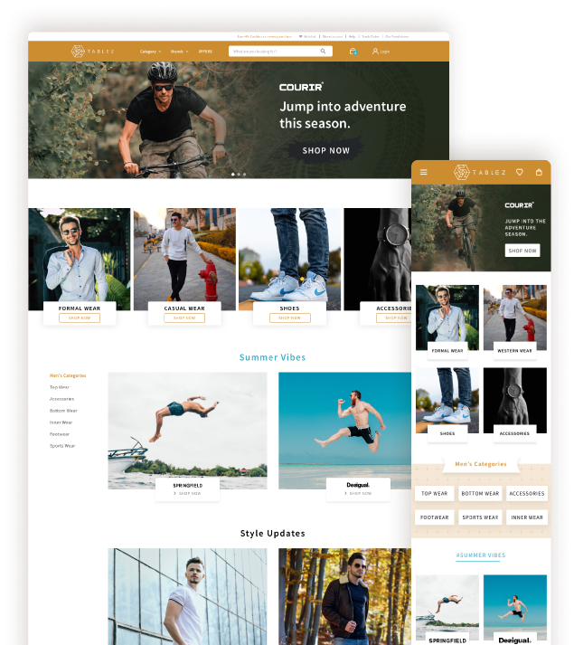

Challenge
Leading as a global retail company & inspiring lifestyles.
Going beyond being just another e-commerce platform, Tablez envisioned themselves to be aggregators of various lifestyles and cultures from all around the globe. And this is what the design had to reflect and embody. A platform that elevated consumer experience.

Process
Through the initial product discovery workshop , we collaborated with LuLu’s multidisciplinary team to align ourselves with their goals. We conducted stakeholder interview to understand how they want to project their brand and their target audience. With initial research & analysis, we ideated & designed features that would add value to the users’ journey right from exploration to feedback.
Basic user flow
The initial flow should be simple so that we can guide the user to achieve his/her goal. We made sure not to put data load anywhere in the flow since the primary objective is to find the red route of the product.
Site Map
The initial flow should be simple so that we can guide the user to achieve his/her goal. We made sure not to put data load anywhere in the flow since the primary objective is to find the red route of the product.

Product Design
visualizing the product through dynamic images.
In order to get the most from the product imagery, the images were displayed in full view in contrast to using thumbnails that might possibly add fricition to the purchase process. Giving the product context, multiple angle views, zoom etc helped us add more value.
making check-out easier with only relevant choices.
Although use-cases like ‘deliver to multiple locations’, ‘deliver for single location’, ‘pick up from store’ were useful features, we looked to refining the checkout process by easier decision-making with lesser yet relevent choices.
simplifying the filter to be effective and usable.
Exploring through product listing is one of the most crucial steps within a user’s journey and hence making the experience of perusing through Tablez’s diversified products simple & easy was an important goal. A filter menu that parallely allowed to search through two levels of categories was designed.